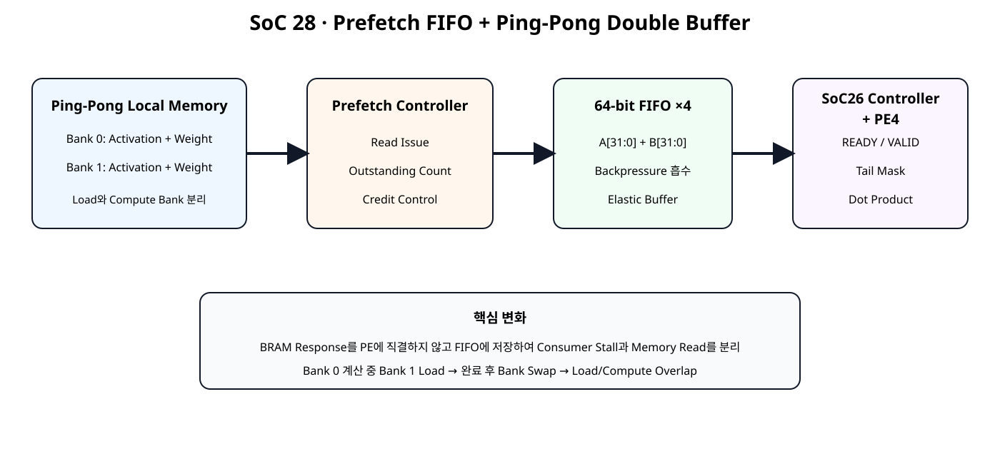
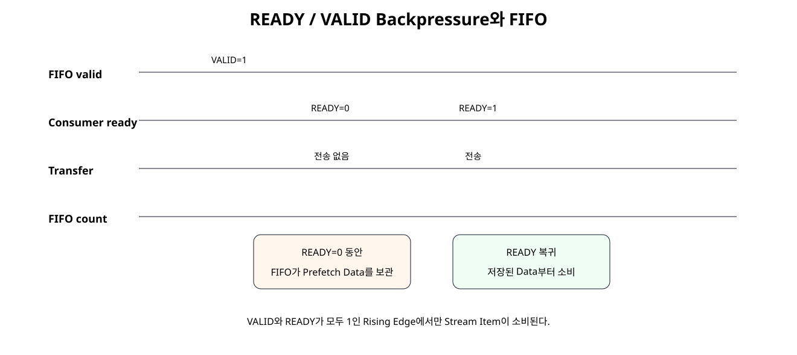
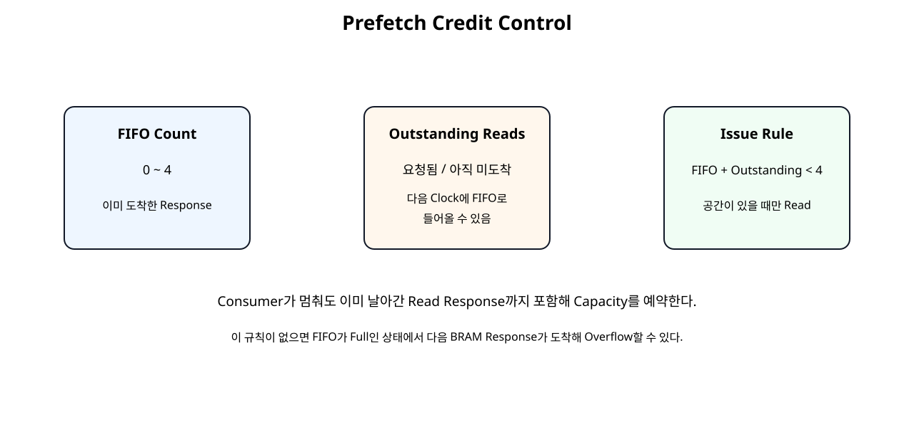
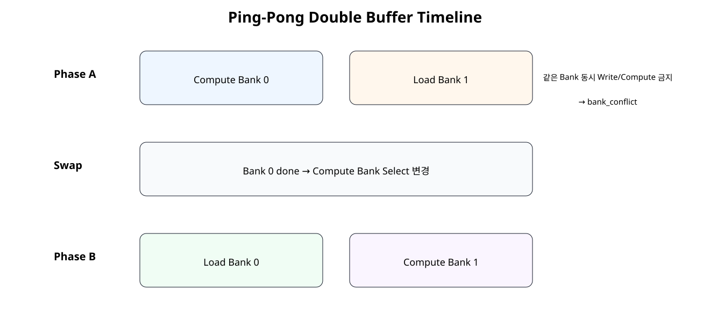

전체 학습 위치
이번 장의 목표

원본 보기 ↗
SoC 27의 제한
SoC 27의 BRAM Feeder는 SoC 26 Controller가 FEED 동안 READY를 유지한다는 Contract를 이용했다. Consumer가 중간에 멈추면 이미 요청한 BRAM Response를 저장할 곳이 부족해질 수 있다.
SoC 28 → BRAM → Prefetch FIFO → Consumer
전체 Architecture
원본 보기 ↗
Prefetch란 무엇인가
Consumer가 Data를 요구한 뒤 Memory Read를 시작하는 대신 FIFO 공간이 있을 때 다음 Vector Group을 미리 읽는다. 첫 Read Latency 이후 PE가 Data를 기다리는 시간을 줄이는 것이 목적이다.
왜 FIFO가 필요한가
BRAM은 이미 발생한 Read Request를 즉시 취소할 수 있는 구조가 아니다. Consumer가 갑자기 READY를 내리더라도 이미 요청된 Response는 돌아온다. FIFO는 이 Data를 임시 저장하는 Elastic Buffer 역할을 한다.
READY / VALID Backpressure

원본 보기 ↗
64-bit FIFO 구조
한 Entry에 PE4 한 Group의 A/B를 함께 저장하므로 두 Stream의 정렬이 깨지지 않는다.
FIFO Push / Pop
Pop → FIFO valid && downstream READY
Full 상태에서도 같은 Clock에 Pop이 일어나면 한 Entry를 교체할 수 있도록 push_ready를 구성했다.
Outstanding Read
Outstanding Read는 BRAM에 Address를 요청했지만 아직 Response가 FIFO에 도착하지 않은 Item이다. FIFO Count만 보면 미래에 들어올 Data를 놓치게 된다.
Credit 계산

원본 보기 ↗
Overflow 방지
새 BRAM Read 허용:
fifo_count + outstanding_reads < FIFO_DEPTHConsumer가 정지하더라도 이미 예약된 Response까지 포함해 공간을 확보하므로 FIFO Overflow를 방지한다.
Conservative Issue 정책
현재 구현은 같은 Clock의 FIFO Pop을 즉시 새로운 Credit으로 계산하지 않는다. Full 경계에서 Read Request가 한 Clock 늦어질 수 있지만 Control을 단순하게 유지하고 Overflow Safety를 우선한다.
BRAM Read와 FIFO Push
BRAM Response → Outstanding -1 / FIFO Push
Consumer Transfer → FIFO Pop
Activation/Weight의 Response Valid가 서로 다르면 response_mismatch_error_o를 남긴다.
Stall 시 동작
feed_stall_i=1은 교육용 Backpressure Hook이다. 이때 Consumer로 VALID를 전달하지 않고 FIFO Pop도 막는다. FIFO가 차면 Credit 조건에 의해 Memory Read Issue도 자동 중단된다.
READY 복귀 시 동작
READY가 다시 올라오면 FIFO에 이미 Prefetch된 Group부터 즉시 전달한다. Memory는 FIFO 공간이 다시 확보되는 만큼 Read Issue를 재개한다.
Ping-Pong Double Buffer

원본 보기 ↗
Bank 0 / Bank 1
각 Bank는 Activation BRAM과 Weight BRAM을 한 쌍으로 가진다. 따라서 전체 Local Memory는 네 개의 Memory Array로 구성된다.
Load / Compute Overlap
Phase B → Compute Bank1 + Load Bank0
Load Time이 Compute Time에 가려지면 전체 Job 사이의 Memory Preparation Gap을 줄일 수 있다.
Bank Conflict 보호
현재 Compute 중인 Bank에 Write하려고 하면 Write Enable을 차단하고 bank_conflict_o를 발생시킨다. Testbench는 실제로 잘못된 Same-bank Write를 시도해 차단되는지 검사한다.
Compute Bank Latch
compute_bank_i는 유효한 start_i에서 내부 Register에 저장한다. 따라서 Host가 Operation 도중 Bank Select를 바꾸더라도 현재 Compute Memory가 바뀌지 않는다.
SoC 26 Controller 재사용
Vector Length, Tail Mask, PE4, DRAIN/FINALIZE 로직은 SoC 26의 vector_dot_controller_pe4.v를 그대로 재사용한다. SoC 28은 Memory Subsystem만 확장한다.
Prefetch FIFO RTL
module stream_fifo_64x4 (
input wire clk,
input wire resetn,
input wire clear_i,
input wire push_valid_i,
output wire push_ready_o,
input wire [63:0] push_data_i,
output wire pop_valid_o,
input wire pop_ready_i,
output wire [63:0] pop_data_o,
output reg [2:0] count_o
);
// Small elastic FIFO for BRAM prefetch responses.
//
// Depth = 4 entries.
// Width = 64 bits = {weight[31:0], activation[31:0]}.
//
// A tiny FIFO is intentionally kept separate from the local BRAM arrays.
// It absorbs consumer backpressure without changing the BRAM contents.
reg [63:0] mem [0:3];
reg [1:0] wr_ptr_q;
reg [1:0] rd_ptr_q;
wire push_w;
wire pop_w;
assign pop_valid_o =
(count_o != 3'd0);
assign pop_data_o =
mem[rd_ptr_q];
// Allow replacement in the same cycle when full and one item pops.
assign push_ready_o =
(count_o < 3'd4) ||
(
(count_o == 3'd4) &&
pop_valid_o &&
pop_ready_i
);
assign push_w =
push_valid_i &&
push_ready_o;
assign pop_w =
pop_valid_o &&
pop_ready_i;
always @(posedge clk) begin
if (!resetn || clear_i) begin
wr_ptr_q <= 2'd0;
rd_ptr_q <= 2'd0;
count_o <= 3'd0;
end else begin
if (push_w) begin
mem[wr_ptr_q] <= push_data_i;
wr_ptr_q <= wr_ptr_q + 2'd1;
end
if (pop_w) begin
rd_ptr_q <= rd_ptr_q + 2'd1;
end
case ({push_w, pop_w})
2'b10: count_o <= count_o + 3'd1;
2'b01: count_o <= count_o - 3'd1;
default: count_o <= count_o;
endcase
end
end
endmodule
Credit Feeder RTL
module bram_prefetch_fifo_feeder #(
parameter integer ADDR_WIDTH = 8
) (
input wire clk,
input wire resetn,
input wire start_i,
input wire [15:0] vector_length_i,
input wire downstream_ready_i,
output wire act_rd_en_o,
output wire [ADDR_WIDTH-1:0] act_rd_addr_o,
input wire [31:0] act_rd_data_i,
input wire act_rd_valid_i,
output wire weight_rd_en_o,
output wire [ADDR_WIDTH-1:0] weight_rd_addr_o,
input wire [31:0] weight_rd_data_i,
input wire weight_rd_valid_i,
output wire vec_valid_o,
output wire [31:0] a_vec_o,
output wire [31:0] b_vec_o,
output reg [15:0] requested_groups_o,
output reg [15:0] received_groups_o,
output reg [15:0] delivered_groups_o,
output wire [2:0] fifo_count_o,
output reg [2:0] outstanding_reads_o,
output reg response_mismatch_error_o,
output reg fifo_overflow_error_o,
output wire active_o
);
// Prefetch policy:
//
// buffered credits = FIFO entries + outstanding BRAM reads.
//
// A new BRAM read request is issued only if:
// 1. operation is active
// 2. more groups remain
// 3. FIFO + outstanding < FIFO depth
//
// This prevents a response from arriving after the FIFO has run out
// of capacity, even when the consumer deasserts READY.
//
// The implementation is intentionally conservative:
// it does not count a same-cycle FIFO pop as immediate new credit.
// This can delay a new read request by one cycle at the full boundary,
// but keeps the control logic simple and safe.
wire [16:0] length_plus3_w;
wire [15:0] total_groups_w;
assign length_plus3_w =
{1'b0, vector_length_i} + 17'd3;
assign total_groups_w =
length_plus3_w[16:2];
reg [15:0] total_groups_q;
reg active_q;
assign active_o = active_q;
wire [3:0] buffered_credits_w;
assign buffered_credits_w =
{1'b0, fifo_count_o} +
{1'b0, outstanding_reads_o};
wire can_issue_w;
assign can_issue_w =
active_q &&
(requested_groups_o < total_groups_q) &&
(buffered_credits_w < 4'd4);
assign act_rd_en_o =
can_issue_w;
assign weight_rd_en_o =
can_issue_w;
assign act_rd_addr_o =
requested_groups_o[ADDR_WIDTH-1:0];
assign weight_rd_addr_o =
requested_groups_o[ADDR_WIDTH-1:0];
wire paired_response_valid_w;
assign paired_response_valid_w =
act_rd_valid_i &&
weight_rd_valid_i;
wire [63:0] fifo_push_data_w;
assign fifo_push_data_w = {
weight_rd_data_i,
act_rd_data_i
};
wire fifo_push_ready_w;
wire fifo_pop_valid_w;
wire [63:0] fifo_pop_data_w;
stream_fifo_64x4 u_prefetch_fifo (
.clk(clk),
.resetn(resetn),
.clear_i(start_i),
.push_valid_i(paired_response_valid_w),
.push_ready_o(fifo_push_ready_w),
.push_data_i(fifo_push_data_w),
.pop_valid_o(fifo_pop_valid_w),
.pop_ready_i(downstream_ready_i),
.pop_data_o(fifo_pop_data_w),
.count_o(fifo_count_o)
);
assign vec_valid_o =
fifo_pop_valid_w;
assign a_vec_o =
fifo_pop_data_w[31:0];
assign b_vec_o =
fifo_pop_data_w[63:32];
wire fifo_pop_w;
assign fifo_pop_w =
fifo_pop_valid_w &&
downstream_ready_i;
always @(posedge clk) begin
if (!resetn) begin
total_groups_q <= 16'd0;
active_q <= 1'b0;
requested_groups_o <= 16'd0;
received_groups_o <= 16'd0;
delivered_groups_o <= 16'd0;
outstanding_reads_o <= 3'd0;
response_mismatch_error_o <= 1'b0;
fifo_overflow_error_o <= 1'b0;
end else begin
if (start_i) begin
total_groups_q <= total_groups_w;
active_q <=
(vector_length_i != 16'd0);
requested_groups_o <= 16'd0;
received_groups_o <= 16'd0;
delivered_groups_o <= 16'd0;
outstanding_reads_o <= 3'd0;
response_mismatch_error_o <= 1'b0;
fifo_overflow_error_o <= 1'b0;
end else begin
if (
act_rd_valid_i ^
weight_rd_valid_i
) begin
response_mismatch_error_o <= 1'b1;
end
if (
paired_response_valid_w &&
!fifo_push_ready_w
) begin
fifo_overflow_error_o <= 1'b1;
end
if (can_issue_w) begin
requested_groups_o <=
requested_groups_o + 16'd1;
end
if (paired_response_valid_w) begin
received_groups_o <=
received_groups_o + 16'd1;
end
if (fifo_pop_w) begin
delivered_groups_o <=
delivered_groups_o + 16'd1;
if (
delivered_groups_o ==
(total_groups_q - 16'd1)
) begin
active_q <= 1'b0;
end
end
case ({
can_issue_w,
paired_response_valid_w
})
2'b10:
outstanding_reads_o <=
outstanding_reads_o + 3'd1;
2'b01:
outstanding_reads_o <=
outstanding_reads_o - 3'd1;
default:
outstanding_reads_o <=
outstanding_reads_o;
endcase
end
end
end
endmodule
Ping-Pong Memory RTL
module pingpong_vector_memory #(
parameter integer ADDR_WIDTH = 8
) (
input wire clk,
input wire resetn,
input wire load_bank_i,
input wire load_active_i,
input wire act_wr_en_i,
input wire [ADDR_WIDTH-1:0] act_wr_addr_i,
input wire [31:0] act_wr_data_i,
input wire weight_wr_en_i,
input wire [ADDR_WIDTH-1:0] weight_wr_addr_i,
input wire [31:0] weight_wr_data_i,
input wire compute_bank_i,
input wire compute_active_i,
input wire act_rd_en_i,
input wire [ADDR_WIDTH-1:0] act_rd_addr_i,
output wire [31:0] act_rd_data_o,
output wire act_rd_valid_o,
input wire weight_rd_en_i,
input wire [ADDR_WIDTH-1:0] weight_rd_addr_i,
output wire [31:0] weight_rd_data_o,
output wire weight_rd_valid_o,
output wire bank_conflict_o
);
// Two complete local-buffer banks.
//
// Bank 0:
// activation0 + weight0
//
// Bank 1:
// activation1 + weight1
//
// Intended ping-pong operation:
// Compute bank 0 while load bank 1.
// Then compute bank 1 while load bank 0.
//
// Writes to the currently-computed bank are blocked while compute_active_i
// is high. A conflict flag makes the violation observable.
wire same_bank_conflict_w;
assign same_bank_conflict_w =
load_active_i &&
compute_active_i &&
(load_bank_i == compute_bank_i);
assign bank_conflict_o =
same_bank_conflict_w &&
(
act_wr_en_i ||
weight_wr_en_i
);
wire safe_act_write_w;
wire safe_weight_write_w;
assign safe_act_write_w =
act_wr_en_i &&
!same_bank_conflict_w;
assign safe_weight_write_w =
weight_wr_en_i &&
!same_bank_conflict_w;
// ---------------- Bank 0 ----------------
wire [31:0] act0_rd_data;
wire act0_rd_valid;
wire [31:0] weight0_rd_data;
wire weight0_rd_valid;
vector_bram_sdp #(
.ADDR_WIDTH(ADDR_WIDTH),
.DATA_WIDTH(32)
) u_act_bank0 (
.clk(clk),
.resetn(resetn),
.wr_en_i(
safe_act_write_w &&
(load_bank_i == 1'b0)
),
.wr_addr_i(act_wr_addr_i),
.wr_data_i(act_wr_data_i),
.rd_en_i(
act_rd_en_i &&
(compute_bank_i == 1'b0)
),
.rd_addr_i(act_rd_addr_i),
.rd_data_o(act0_rd_data),
.rd_valid_o(act0_rd_valid)
);
vector_bram_sdp #(
.ADDR_WIDTH(ADDR_WIDTH),
.DATA_WIDTH(32)
) u_weight_bank0 (
.clk(clk),
.resetn(resetn),
.wr_en_i(
safe_weight_write_w &&
(load_bank_i == 1'b0)
),
.wr_addr_i(weight_wr_addr_i),
.wr_data_i(weight_wr_data_i),
.rd_en_i(
weight_rd_en_i &&
(compute_bank_i == 1'b0)
),
.rd_addr_i(weight_rd_addr_i),
.rd_data_o(weight0_rd_data),
.rd_valid_o(weight0_rd_valid)
);
// ---------------- Bank 1 ----------------
wire [31:0] act1_rd_data;
wire act1_rd_valid;
wire [31:0] weight1_rd_data;
wire weight1_rd_valid;
vector_bram_sdp #(
.ADDR_WIDTH(ADDR_WIDTH),
.DATA_WIDTH(32)
) u_act_bank1 (
.clk(clk),
.resetn(resetn),
.wr_en_i(
safe_act_write_w &&
(load_bank_i == 1'b1)
),
.wr_addr_i(act_wr_addr_i),
.wr_data_i(act_wr_data_i),
.rd_en_i(
act_rd_en_i &&
(compute_bank_i == 1'b1)
),
.rd_addr_i(act_rd_addr_i),
.rd_data_o(act1_rd_data),
.rd_valid_o(act1_rd_valid)
);
vector_bram_sdp #(
.ADDR_WIDTH(ADDR_WIDTH),
.DATA_WIDTH(32)
) u_weight_bank1 (
.clk(clk),
.resetn(resetn),
.wr_en_i(
safe_weight_write_w &&
(load_bank_i == 1'b1)
),
.wr_addr_i(weight_wr_addr_i),
.wr_data_i(weight_wr_data_i),
.rd_en_i(
weight_rd_en_i &&
(compute_bank_i == 1'b1)
),
.rd_addr_i(weight_rd_addr_i),
.rd_data_o(weight1_rd_data),
.rd_valid_o(weight1_rd_valid)
);
assign act_rd_data_o =
compute_bank_i
? act1_rd_data
: act0_rd_data;
assign act_rd_valid_o =
compute_bank_i
? act1_rd_valid
: act0_rd_valid;
assign weight_rd_data_o =
compute_bank_i
? weight1_rd_data
: weight0_rd_data;
assign weight_rd_valid_o =
compute_bank_i
? weight1_rd_valid
: weight0_rd_valid;
endmodule
Integrated Accelerator RTL
module prefetch_double_buffer_dot_accelerator #(
parameter integer ADDR_WIDTH = 8
) (
input wire clk,
input wire resetn,
// ---------------- Load side ----------------
input wire load_bank_i,
input wire load_active_i,
input wire act_wr_en_i,
input wire [ADDR_WIDTH-1:0] act_wr_addr_i,
input wire [31:0] act_wr_data_i,
input wire weight_wr_en_i,
input wire [ADDR_WIDTH-1:0] weight_wr_addr_i,
input wire [31:0] weight_wr_data_i,
// ---------------- Compute command ----------------
input wire compute_bank_i,
input wire start_i,
input wire [15:0] vector_length_i,
// Teaching/test hook:
// when high, temporarily backpressure the stream between
// prefetch FIFO and the SoC26 vector controller.
input wire feed_stall_i,
// ---------------- Result/status ----------------
output wire busy_o,
output wire done_o,
output wire result_valid_o,
output wire signed [31:0] result_o,
output wire [15:0] requested_groups_o,
output wire [15:0] received_groups_o,
output wire [15:0] delivered_groups_o,
output wire [15:0] accepted_groups_o,
output wire [15:0] completed_groups_o,
output wire [2:0] fifo_count_o,
output wire [2:0] outstanding_reads_o,
output wire bank_conflict_o,
output wire range_error_o,
output wire response_mismatch_error_o,
output wire fifo_overflow_error_o
);
// SoC 28 architecture:
//
// Ping-pong local memory
// ↓
// BRAM prefetch + credit control
// ↓
// 64-bit elastic FIFO
// ↓
// optional backpressure gate
// ↓
// SoC 26 vector controller + PE4
//
// The compute-bank selection is latched on a valid start command so the
// memory bank cannot change in the middle of an operation.
localparam [16:0] MAX_ELEMENTS_W =
(17'd4 << ADDR_WIDTH);
wire range_error_w;
wire start_valid_w;
assign range_error_w =
({1'b0, vector_length_i} > MAX_ELEMENTS_W);
assign range_error_o =
start_i &&
range_error_w;
assign start_valid_w =
start_i &&
!range_error_w;
reg compute_bank_q;
always @(posedge clk) begin
if (!resetn) begin
compute_bank_q <= 1'b0;
end else if (start_valid_w) begin
compute_bank_q <= compute_bank_i;
end
end
// ---------------- Ping-pong memory ----------------
wire act_rd_en;
wire [ADDR_WIDTH-1:0] act_rd_addr;
wire [31:0] act_rd_data;
wire act_rd_valid;
wire weight_rd_en;
wire [ADDR_WIDTH-1:0] weight_rd_addr;
wire [31:0] weight_rd_data;
wire weight_rd_valid;
wire compute_active_w;
assign compute_active_w =
busy_o ||
start_valid_w;
pingpong_vector_memory #(
.ADDR_WIDTH(ADDR_WIDTH)
) u_pingpong_memory (
.clk(clk),
.resetn(resetn),
.load_bank_i(load_bank_i),
.load_active_i(load_active_i),
.act_wr_en_i(act_wr_en_i),
.act_wr_addr_i(act_wr_addr_i),
.act_wr_data_i(act_wr_data_i),
.weight_wr_en_i(weight_wr_en_i),
.weight_wr_addr_i(weight_wr_addr_i),
.weight_wr_data_i(weight_wr_data_i),
.compute_bank_i(compute_bank_q),
.compute_active_i(compute_active_w),
.act_rd_en_i(act_rd_en),
.act_rd_addr_i(act_rd_addr),
.act_rd_data_o(act_rd_data),
.act_rd_valid_o(act_rd_valid),
.weight_rd_en_i(weight_rd_en),
.weight_rd_addr_i(weight_rd_addr),
.weight_rd_data_o(weight_rd_data),
.weight_rd_valid_o(weight_rd_valid),
.bank_conflict_o(bank_conflict_o)
);
// ---------------- Prefetch FIFO feeder ----------------
wire feeder_vec_valid;
wire [31:0] feeder_a_vec;
wire [31:0] feeder_b_vec;
wire controller_vec_ready;
wire feeder_downstream_ready;
assign feeder_downstream_ready =
controller_vec_ready &&
!feed_stall_i;
bram_prefetch_fifo_feeder #(
.ADDR_WIDTH(ADDR_WIDTH)
) u_prefetch_feeder (
.clk(clk),
.resetn(resetn),
.start_i(start_valid_w),
.vector_length_i(vector_length_i),
.downstream_ready_i(feeder_downstream_ready),
.act_rd_en_o(act_rd_en),
.act_rd_addr_o(act_rd_addr),
.act_rd_data_i(act_rd_data),
.act_rd_valid_i(act_rd_valid),
.weight_rd_en_o(weight_rd_en),
.weight_rd_addr_o(weight_rd_addr),
.weight_rd_data_i(weight_rd_data),
.weight_rd_valid_i(weight_rd_valid),
.vec_valid_o(feeder_vec_valid),
.a_vec_o(feeder_a_vec),
.b_vec_o(feeder_b_vec),
.requested_groups_o(requested_groups_o),
.received_groups_o(received_groups_o),
.delivered_groups_o(delivered_groups_o),
.fifo_count_o(fifo_count_o),
.outstanding_reads_o(outstanding_reads_o),
.response_mismatch_error_o(
response_mismatch_error_o
),
.fifo_overflow_error_o(
fifo_overflow_error_o
),
.active_o()
);
// ---------------- SoC26 controller + PE4 ----------------
wire controller_vec_valid;
assign controller_vec_valid =
feeder_vec_valid &&
!feed_stall_i;
vector_dot_controller_pe4 u_vector_controller (
.clk(clk),
.resetn(resetn),
.start_i(start_valid_w),
.vector_length_i(vector_length_i),
.vec_valid_i(controller_vec_valid),
.vec_ready_o(controller_vec_ready),
.a_vec_i(feeder_a_vec),
.b_vec_i(feeder_b_vec),
.busy_o(busy_o),
.done_o(done_o),
.result_valid_o(result_valid_o),
.result_o(result_o),
.accepted_groups_o(accepted_groups_o),
.completed_groups_o(completed_groups_o)
);
endmodule
Board Demo
| Bank | A | B | 예상 결과 |
|---|---|---|---|
| 0 | 1~10 | 1 | 55 → 0x0037 |
| 1 | 2,4,...,20 | 1 | 110 → 0x006E |
Bank 0을 계산하는 동안 Bank 1 세 Word를 Load하고, 첫 결과가 끝나면 Bank 1로 Swap하여 두 번째 계산을 수행한다.
Self-Checking Testbench
`timescale 1ns / 1ps
module tb_prefetch_double_buffer_dot_accelerator;
logic clk = 1'b0;
logic resetn = 1'b0;
// Load side.
logic load_bank_i = 1'b0;
logic load_active_i = 1'b0;
logic act_wr_en_i = 1'b0;
logic [7:0] act_wr_addr_i = 8'd0;
logic [31:0] act_wr_data_i = 32'h0;
logic weight_wr_en_i = 1'b0;
logic [7:0] weight_wr_addr_i = 8'd0;
logic [31:0] weight_wr_data_i = 32'h0;
// Compute side.
logic compute_bank_i = 1'b0;
logic start_i = 1'b0;
logic [15:0] vector_length_i = 16'd0;
logic feed_stall_i = 1'b0;
wire busy_o;
wire done_o;
wire result_valid_o;
wire signed [31:0] result_o;
wire [15:0] requested_groups_o;
wire [15:0] received_groups_o;
wire [15:0] delivered_groups_o;
wire [15:0] accepted_groups_o;
wire [15:0] completed_groups_o;
wire [2:0] fifo_count_o;
wire [2:0] outstanding_reads_o;
wire bank_conflict_o;
wire range_error_o;
wire response_mismatch_error_o;
wire fifo_overflow_error_o;
int error_count = 0;
int check_count = 0;
int stall_counter = 0;
bit stall_enable = 0;
int max_fifo_seen = 0;
always #5 clk = ~clk;
prefetch_double_buffer_dot_accelerator #(
.ADDR_WIDTH(8)
) dut (
.clk(clk),
.resetn(resetn),
.load_bank_i(load_bank_i),
.load_active_i(load_active_i),
.act_wr_en_i(act_wr_en_i),
.act_wr_addr_i(act_wr_addr_i),
.act_wr_data_i(act_wr_data_i),
.weight_wr_en_i(weight_wr_en_i),
.weight_wr_addr_i(weight_wr_addr_i),
.weight_wr_data_i(weight_wr_data_i),
.compute_bank_i(compute_bank_i),
.start_i(start_i),
.vector_length_i(vector_length_i),
.feed_stall_i(feed_stall_i),
.busy_o(busy_o),
.done_o(done_o),
.result_valid_o(result_valid_o),
.result_o(result_o),
.requested_groups_o(requested_groups_o),
.received_groups_o(received_groups_o),
.delivered_groups_o(delivered_groups_o),
.accepted_groups_o(accepted_groups_o),
.completed_groups_o(completed_groups_o),
.fifo_count_o(fifo_count_o),
.outstanding_reads_o(outstanding_reads_o),
.bank_conflict_o(bank_conflict_o),
.range_error_o(range_error_o),
.response_mismatch_error_o(response_mismatch_error_o),
.fifo_overflow_error_o(fifo_overflow_error_o)
);
always @(posedge clk) begin
if (fifo_count_o > max_fifo_seen) begin
max_fifo_seen <= fifo_count_o;
end
end
// Deterministic consumer backpressure.
// Pattern contains both single-cycle and two-cycle stalls.
always @(negedge clk) begin
if (!resetn) begin
stall_counter <= 0;
feed_stall_i <= 1'b0;
end else if (stall_enable) begin
stall_counter <= stall_counter + 1;
feed_stall_i <=
((stall_counter % 7) == 2) ||
((stall_counter % 7) == 3) ||
((stall_counter % 11) == 6);
end else begin
feed_stall_i <= 1'b0;
stall_counter <= 0;
end
end
function automatic integer ceil_div4(
input integer n
);
ceil_div4 = (n + 3) / 4;
endfunction
function automatic integer signed signed8(
input integer value
);
integer temp;
begin
temp = value & 8'hFF;
if (temp >= 128)
temp = temp - 256;
signed8 = temp;
end
endfunction
function automatic integer signed gen_a0(
input integer index
);
gen_a0 = signed8((index * 29) + 17);
endfunction
function automatic integer signed gen_b0(
input integer index
);
gen_b0 = signed8((index * 47) + 91);
endfunction
function automatic integer signed gen_a1(
input integer index
);
gen_a1 = signed8((index * 13) + 33);
endfunction
function automatic integer signed gen_b1(
input integer index
);
gen_b1 = signed8((index * 19) + 7);
endfunction
function automatic [31:0] pack4(
input integer x0,
input integer x1,
input integer x2,
input integer x3
);
begin
pack4 = {
x3[7:0],
x2[7:0],
x1[7:0],
x0[7:0]
};
end
endfunction
task automatic check_true(
input string name,
input bit condition
);
begin
check_count++;
if (!condition) begin
error_count++;
$error("CHECK FAIL: %s", name);
end else begin
$display("CHECK PASS: %s", name);
end
end
endtask
task automatic check_eq32(
input string name,
input logic signed [31:0] actual,
input logic signed [31:0] expected
);
begin
check_count++;
if (actual !== expected) begin
error_count++;
$error(
"CHECK FAIL: %s actual=%0d expected=%0d",
name,
actual,
expected
);
end else begin
$display(
"CHECK PASS: %s = %0d",
name,
actual
);
end
end
endtask
task automatic write_group(
input integer bank,
input integer group_index,
input integer length,
input integer pattern_id,
inout integer signed expected_acc
);
integer lane;
integer scalar_index;
integer signed a_lane [0:3];
integer signed b_lane [0:3];
integer signed a_value;
integer signed b_value;
begin
// Intentional garbage first. Tail elements must be masked later.
for (lane = 0; lane < 4; lane++) begin
a_lane[lane] = 127;
b_lane[lane] = -128;
end
for (lane = 0; lane < 4; lane++) begin
scalar_index = (group_index * 4) + lane;
if (scalar_index < length) begin
if (pattern_id == 0) begin
a_value = gen_a0(scalar_index);
b_value = gen_b0(scalar_index);
end else begin
a_value = gen_a1(scalar_index);
b_value = gen_b1(scalar_index);
end
a_lane[lane] = a_value;
b_lane[lane] = b_value;
expected_acc =
expected_acc +
(a_value * b_value);
end
end
@(negedge clk);
load_bank_i = bank[0];
load_active_i = 1'b1;
act_wr_addr_i = group_index[7:0];
act_wr_data_i = pack4(
a_lane[0],
a_lane[1],
a_lane[2],
a_lane[3]
);
act_wr_en_i = 1'b1;
weight_wr_addr_i = group_index[7:0];
weight_wr_data_i = pack4(
b_lane[0],
b_lane[1],
b_lane[2],
b_lane[3]
);
weight_wr_en_i = 1'b1;
@(posedge clk);
#1;
@(negedge clk);
act_wr_en_i = 1'b0;
weight_wr_en_i = 1'b0;
load_active_i = 1'b0;
end
endtask
task automatic load_vector(
input integer bank,
input integer length,
input integer pattern_id,
output integer signed expected_acc
);
integer groups;
integer group_index;
begin
groups = ceil_div4(length);
expected_acc = 0;
for (
group_index = 0;
group_index < groups;
group_index++
) begin
write_group(
bank,
group_index,
length,
pattern_id,
expected_acc
);
end
end
endtask
task automatic pulse_start(
input integer bank,
input integer length
);
begin
@(negedge clk);
compute_bank_i = bank[0];
vector_length_i = length[15:0];
start_i = 1'b1;
@(negedge clk);
start_i = 1'b0;
end
endtask
task automatic wait_and_check_result(
input string name,
input integer length,
input integer signed expected_acc
);
integer groups;
integer timeout;
begin
groups = ceil_div4(length);
timeout = 0;
while (
(result_valid_o !== 1'b1) &&
(timeout < 4000)
) begin
@(posedge clk);
#1;
timeout++;
end
check_true(
{name, " result_valid"},
result_valid_o === 1'b1
);
check_true(
{name, " done"},
done_o === 1'b1
);
check_eq32(
{name, " result"},
result_o,
expected_acc
);
check_true(
{name, " requested"},
requested_groups_o == groups
);
check_true(
{name, " received"},
received_groups_o == groups
);
check_true(
{name, " delivered"},
delivered_groups_o == groups
);
check_true(
{name, " accepted"},
accepted_groups_o == groups
);
check_true(
{name, " completed"},
completed_groups_o == groups
);
check_true(
{name, " no response mismatch"},
response_mismatch_error_o === 1'b0
);
check_true(
{name, " no FIFO overflow"},
fifo_overflow_error_o === 1'b0
);
@(posedge clk);
#1;
end
endtask
task automatic attempt_same_bank_write_conflict;
begin
check_true(
"compute still busy before conflict test",
busy_o === 1'b1
);
@(negedge clk);
load_bank_i = 1'b0;
load_active_i = 1'b1;
act_wr_addr_i = 8'd0;
act_wr_data_i = 32'hDEAD_BEEF;
act_wr_en_i = 1'b1;
weight_wr_addr_i = 8'd0;
weight_wr_data_i = 32'hCAFE_BABE;
weight_wr_en_i = 1'b1;
#1;
check_true(
"same-bank write conflict asserted",
bank_conflict_o === 1'b1
);
@(posedge clk);
#1;
@(negedge clk);
act_wr_en_i = 1'b0;
weight_wr_en_i = 1'b0;
load_active_i = 1'b0;
end
endtask
task automatic run_range_error_case;
begin
@(negedge clk);
compute_bank_i = 1'b0;
vector_length_i = 16'd1025;
start_i = 1'b1;
#1;
check_true(
"length 1025 range error",
range_error_o === 1'b1
);
@(posedge clk);
#1;
@(negedge clk);
start_i = 1'b0;
repeat (4) @(posedge clk);
#1;
check_true(
"range error command not busy",
busy_o === 1'b0
);
end
endtask
initial begin
integer signed expected_bank0;
integer signed expected_bank1;
integer group_index;
repeat (5) @(posedge clk);
resetn = 1'b1;
// --------------------------------------------------------
// 1. Load Bank 0 completely.
// --------------------------------------------------------
load_vector(
0,
64,
0,
expected_bank0
);
// --------------------------------------------------------
// 2. Start computing Bank 0 with backpressure enabled.
// --------------------------------------------------------
stall_enable = 1'b1;
pulse_start(
0,
64
);
// --------------------------------------------------------
// 3. While Bank 0 computes, load Bank 1.
// --------------------------------------------------------
expected_bank1 = 0;
for (group_index = 0; group_index < ceil_div4(31); group_index++) begin
write_group(
1,
group_index,
31,
1,
expected_bank1
);
end
// Wrong-bank write must be rejected while Bank 0 is active.
attempt_same_bank_write_conflict();
wait_and_check_result(
"bank0",
64,
expected_bank0
);
check_true(
"prefetch FIFO exercised",
max_fifo_seen >= 2
);
// --------------------------------------------------------
// 4. Compute the Bank 1 data loaded during Bank 0 compute.
// --------------------------------------------------------
stall_enable = 1'b1;
pulse_start(
1,
31
);
wait_and_check_result(
"bank1",
31,
expected_bank1
);
stall_enable = 1'b0;
// --------------------------------------------------------
// 5. Capacity guard.
// --------------------------------------------------------
run_range_error_case();
$display("");
$display("SOC28 MAX FIFO COUNT : %0d", max_fifo_seen);
$display("SOC28 CHECK COUNT : %0d", check_count);
$display("SOC28 ERROR COUNT : %0d", error_count);
if (error_count == 0) begin
$display("SOC28 PREFETCH/DOUBLE-BUFFER TEST: PASS");
end else begin
$fatal(
1,
"SOC28 PREFETCH/DOUBLE-BUFFER TEST: FAIL (%0d errors)",
error_count
);
end
#20;
$finish;
end
endmodule
Bank 0 Length 64 계산 중 Bank 1 Length 31을 Load하고, Consumer Stall Pattern과 Same-bank Conflict를 동시에 운동시킨다.
Python Credit Model
bank,length,groups,result_raw,max_fifo,cycles
0,64,16,-35552,4,26
1,31,8,11968,3,14
credit rule: FIFO entries + outstanding reads < 4 before issue
bank0 compute may overlap bank1 load because memories are separate
same-bank write during active compute must be blocked
board demo first result = 55 -> 0x0037
board demo second result = 110 -> 0x006E
SOC28 PYTHON PREFETCH/DOUBLE-BUFFER REFERENCE: PASS
Spreadsheet runtime warmup failed during python startup
Traceback (most recent call last):
File "/tmp/tmp.L2TH2Y5coc/artifact_tool_v2-2.8.22/artifact_tool/patches/warm_spreadsheet_runtime_on_startup.py", line 26, in warm_spreadsheet_runtime_on_startup
File "/tmp/tmp.L2TH2Y5coc/artifact_tool_v2-2.8.22/artifact_tool/spreadsheet_warmup.py", line 785, in warm_spreadsheet_runtime
File "/tmp/tmp.L2TH2Y5coc/artifact_tool_v2-2.8.22/artifact_tool/spreadsheet_warmup.py", line 720, in _warm_feature_flows
File "/tmp/tmp.L2TH2Y5coc/artifact_tool_v2-2.8.22/artifact_tool/spreadsheet_warmup.py", line 704, in _warm_collaboration_flows
File "/tmp/tmp.L2TH2Y5coc/artifact_tool_v2-2.8.22/artifact_tool/generated/interface/models.py", line 32317, in hydrate_crdt_from_proto
File "/tmp/tmp.L2TH2Y5coc/artifact_tool_v2-2.8.22/artifact_tool/rpc/remote.py", line 749, in __call__
File "/tmp/tmp.L2TH2Y5coc/artifact_tool_v2-2.8.22/artifact_tool/rpc/client.py", line 150, in call
artifact_tool.rpc.client.RemoteError: hydrateCrdtFromProto requires an empty collaborative document.
BRAM Response 1 Clock 모델과 동일 Stall Pattern으로 FIFO Occupancy 및 Credit Safety를 독립 검증했다.
FIFO Occupancy 검증
Python Reference에서 Bank 0은 FIFO 최대 4 Entry, Bank 1은 최대 3 Entry까지 사용했다. 두 경우 모두 requested = received = delivered가 유지되고 FIFO Depth 4를 넘지 않았다.
OOC Synthesis
# SoC 28 · Generic Prefetch/FIFO/Double-Buffer inference check
#
# This flow keeps the accelerator generic so that synthesis can be used
# to inspect the complete two-bank memory subsystem, FIFO, and PE4.
set script_dir [file dirname [file normalize [info script]]]
set root_dir [file normalize [file join $script_dir ".."]]
set rtl_dir [file join $root_dir "rtl"]
set out_dir [file normalize [file join $root_dir "reports" "generic_ooc"]]
file mkdir $out_dir
create_project -in_memory -part xc7a35tcpg236-1
read_verilog [file join $rtl_dir "mul_s8_dsp.v"]
read_verilog [file join $rtl_dir "pe4_dot_accum_pipelined.v"]
read_verilog [file join $rtl_dir "vector_dot_controller_pe4.v"]
read_verilog [file join $rtl_dir "vector_bram_sdp.v"]
read_verilog [file join $rtl_dir "stream_fifo_64x4.v"]
read_verilog [file join $rtl_dir "bram_prefetch_fifo_feeder.v"]
read_verilog [file join $rtl_dir "pingpong_vector_memory.v"]
read_verilog [file join $rtl_dir "prefetch_double_buffer_dot_accelerator.v"]
synth_design \
-mode out_of_context \
-top prefetch_double_buffer_dot_accelerator \
-part xc7a35tcpg236-1
report_utilization \
-hierarchical \
-file [file join $out_dir "01_utilization_ooc.rpt"]
report_ram_utilization \
-include_lutram \
-file [file join $out_dir "02_ram_utilization_ooc.rpt"] \
-csv [file join $out_dir "02_ram_utilization_ooc.csv"]
redirect -file [file join $out_dir "03_ramb_cells_ooc.rpt"] {
set ramb_cells [get_cells -hier -filter {REF_NAME =~ RAMB*}]
puts "RAMB primitive count: [llength $ramb_cells]"
foreach cell $ramb_cells {
puts "[get_property REF_NAME $cell] $cell"
}
}
redirect -file [file join $out_dir "04_dsp_cells_ooc.rpt"] {
set dsp_cells [get_cells -hier -filter {REF_NAME =~ DSP48*}]
puts "DSP48 primitive count: [llength $dsp_cells]"
foreach cell $dsp_cells {
puts "[get_property REF_NAME $cell] $cell"
}
}
report_timing_summary \
-delay_type min_max \
-report_unconstrained \
-max_paths 20 \
-file [file join $out_dir "05_timing_summary_ooc.rpt"]
report_design_analysis \
-max_paths 50 \
-setup \
-logic_level_distribution \
-file [file join $out_dir "06_design_analysis_ooc.rpt"]
puts ""
puts "SoC 28 generic OOC synthesis complete."
puts "Check:"
puts " - four local memory arrays"
puts " - RAMB mapping"
puts " - small FIFO implementation"
puts " - DSP48 mapping"
puts "Do not claim primitive counts until these reports are generated."
Generic Accelerator를 Out-of-Context로 합성해 두 Bank의 네 Memory Array, Tiny FIFO, DSP Mapping을 고정 Demo 최적화와 분리해 확인한다.
RAM / FIFO Mapping 확인
report_ram_utilization -include_lutram로 Local Buffer와 Tiny FIFO가 실제 어떤 Primitive에 Mapping됐는지 확인한다. 4-entry FIFO는 작기 때문에 Block RAM 사용을 강제하지 않았다.
Post-route Timing
# SoC 28 · Basys3 ping-pong board demonstration
set script_dir [file dirname [file normalize [info script]]]
set root_dir [file normalize [file join $script_dir ".."]]
set rtl_dir [file join $root_dir "rtl"]
set xdc_dir [file join $root_dir "constraints"]
set out_dir [file normalize [file join $root_dir "reports" "board_demo"]]
file mkdir $out_dir
create_project -in_memory -part xc7a35tcpg236-1
read_verilog [file join $rtl_dir "reset_active_high_to_active_low.v"]
read_verilog [file join $rtl_dir "mul_s8_dsp.v"]
read_verilog [file join $rtl_dir "pe4_dot_accum_pipelined.v"]
read_verilog [file join $rtl_dir "vector_dot_controller_pe4.v"]
read_verilog [file join $rtl_dir "vector_bram_sdp.v"]
read_verilog [file join $rtl_dir "stream_fifo_64x4.v"]
read_verilog [file join $rtl_dir "bram_prefetch_fifo_feeder.v"]
read_verilog [file join $rtl_dir "pingpong_vector_memory.v"]
read_verilog [file join $rtl_dir "prefetch_double_buffer_dot_accelerator.v"]
read_verilog [file join $rtl_dir "double_buffer_demo_controller.v"]
read_verilog [file join $rtl_dir "double_buffer_result_sink.v"]
read_verilog [file join $rtl_dir "prefetch_double_buffer_basys3_top.v"]
synth_design \
-top prefetch_double_buffer_basys3_top \
-part xc7a35tcpg236-1
read_xdc [file join $xdc_dir "basys3_soc28_lab.xdc"]
create_clock \
-name sys_clk \
-period 10.000 \
[get_ports clk]
report_utilization \
-hierarchical \
-file [file join $out_dir "01_utilization_post_synth.rpt"]
report_ram_utilization \
-include_lutram \
-file [file join $out_dir "02_ram_utilization_post_synth.rpt"]
opt_design
place_design
phys_opt_design
route_design
report_utilization \
-hierarchical \
-file [file join $out_dir "03_utilization_post_route.rpt"]
report_ram_utilization \
-include_lutram \
-file [file join $out_dir "04_ram_utilization_post_route.rpt"]
report_timing_summary \
-delay_type min_max \
-report_unconstrained \
-max_paths 20 \
-file [file join $out_dir "05_timing_summary_post_route.rpt"]
report_timing \
-delay_type max \
-max_paths 20 \
-nworst 1 \
-sort_by group \
-input_pins \
-file [file join $out_dir "06_worst_setup_paths.rpt"]
report_design_analysis \
-max_paths 50 \
-setup \
-logic_level_distribution \
-file [file join $out_dir "07_design_analysis_post_route.rpt"]
set_switching_activity \
-default_static_probability 0.5 \
-default_toggle_rate 12.5
report_power \
-file [file join $out_dir "08_power_normalized_activity.rpt"] \
-rpx [file join $out_dir "08_power_normalized_activity.rpx"]
report_methodology \
-file [file join $out_dir "09_methodology_post_route.rpt"]
write_checkpoint -force \
[file join $out_dir "soc28_board_demo_post_route.dcp"]
puts ""
puts "SoC 28 board implementation complete."
puts "Expected board-demo sequence:"
puts " first result = 55 = 0x0037"
puts " second result = 110 = 0x006E"
BRAM → Prefetch/FIFO → Controller 경로와 Bank Select/Conflict Logic이 추가되므로 Post-route WNS/TNS와 Worst Setup Path를 다시 확인한다.
Power 관점
Double Buffer는 Local BRAM 수를 늘리고 Prefetch는 불필요한 Stall을 줄여 Activity Pattern을 바꾼다. 따라서 “Buffer를 두 배로 만들었으니 Power도 두 배”라고 단정하지 않고 동일 Activity 조건의 Post-route Power Report로 비교한다.
Double Buffer의 한계
Double Buffer는 Load와 Compute를 겹칠 수 있지만, 다음 Tile Load 시간이 Compute 시간보다 길면 결국 Compute가 기다린다. 이후에는 Data Reuse와 Tiling으로 외부 Memory Traffic 자체를 줄여야 한다.
SoC 29 연결
SoC 29 → 필요한 Memory Traffic 자체 줄이기
다음 장에서는 Weight Stationary, Activation Broadcast, Tiling을 이용해 같은 Weight/Activation을 여러 연산에서 재사용한다.
오류 점검
| 증상 | 원인 | 확인 |
|---|---|---|
| FIFO Overflow | Outstanding Read를 Credit에 미포함 | fifo + outstanding < depth |
| STALL 중 Data 손실 | VALID/Data 유지 실패 | FIFO Pop은 READY에서만 |
| A/B Pair가 어긋남 | Response Valid 불일치 | response_mismatch_error |
| 같은 Bank Data가 깨짐 | Compute 중 Same-bank Write | bank_conflict |
| Bank Swap 후 잘못된 Memory Read | Bank Select 미Latch | compute_bank_q |
| FIFO가 전혀 차지 않음 | Prefetch가 Consumer와 동일 속도만 발행 | Stall Test |
| BRAM이 예상보다 많음/적음 | Mapping/Optimization | OOC RAM Report |
| Double Buffer인데 성능 향상 없음 | Load가 Compute보다 길거나 Reuse 부족 | SoC29 Tiling/Data Reuse |
SoC 28 완료 체크리스트
- [ ] Prefetch와 Demand Read의 차이를 설명한다.
- [ ] FIFO가 Consumer Backpressure를 흡수하는 이유를 이해한다.
- [ ] VALID와 READY가 모두 1일 때만 Item이 소비됨을 이해한다.
- [ ] FIFO Count와 Outstanding Read를 구분한다.
- [ ]
fifo + outstanding < depthCredit 규칙을 설명한다. - [ ] BRAM Response Pair를 64-bit FIFO Entry로 저장한다.
- [ ] Consumer Stall 시 Read Issue가 자동 중단된다.
- [ ] READY 복귀 후 Prefetch Data부터 다시 소비한다.
- [ ] Ping-Pong Bank 0/1 구조를 구현한다.
- [ ] Compute Bank와 Load Bank를 분리한다.
- [ ] Same-bank Write를 차단하고 Conflict를 검출한다.
- [ ] Compute Bank를 Start 시점에 Latch한다.
- [ ] Compute 중 다음 Bank Load를 실제 Test한다.
- [ ] Generic OOC와 Board Post-route Report를 분리한다.
공식 매뉴얼 및 근거
| 문서 | 확인 항목 |
|---|---|
| AMD UG901 · Memory Inference Capabilities · 2026.1 | Simple Dual Port, Enable, Optional Output Register |
| AMD UG901 · RAM HDL Coding Techniques · 2026.1 | RAM Primitive 직접 Instantiation 대신 HDL Inference |
| AMD UG949 · RAM Performance · 2026.1 | Dedicated/Distributed RAM 선택과 Output Pipeline 권장 |
| AMD UG949 · Dedicated Block Timing · 2026.1 | BRAM/DSP 경로 Pipeline과 Timing 주의 |
| AMD UG906 · Report RAM Utilization · 2026.1 | Memory Width/Depth/Pipeline/Enable/Primitive 분석 |
| AMD UG906 · Running RAM Utilization · 2026.1 | -include_lutram와 CSV Report |
| AMD PG103 · READY/VALID Handshake · 2026 | READY와 VALID가 Rising Edge에서 동시에 High일 때 Transfer |